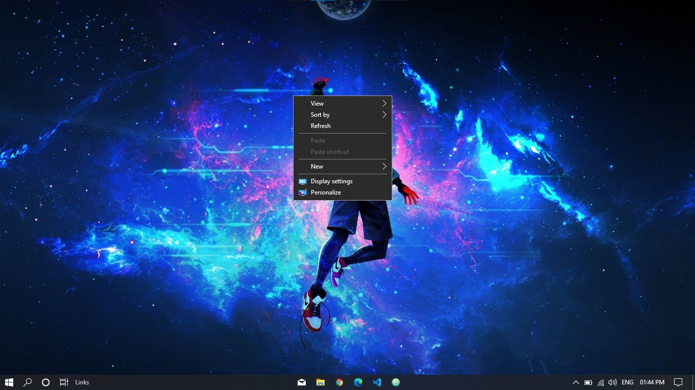
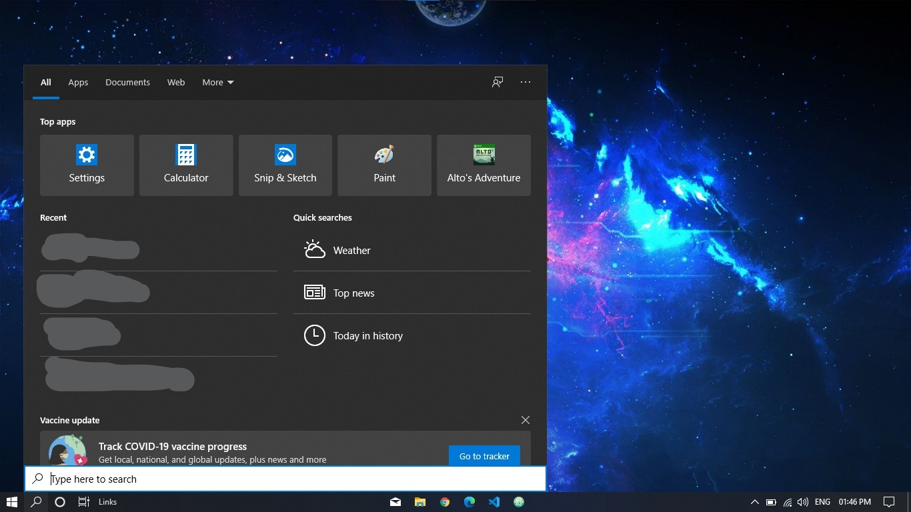
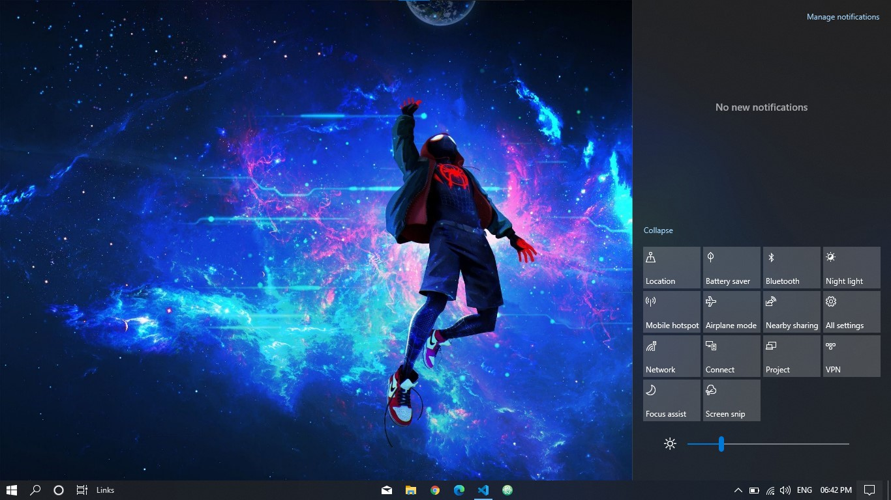

Trackpad
You know how to use the trackpad but did you know that if you use multiple fingers on your trackpad you can do awesome stuff with your trackpad in windows10. Now let's learn about how to use your trackpad properly on windows10.
Two-finger tap
If you tap with your two fingers, the right-click menu or the context menu will pop up.

Three-finger tap
If you tap the trackpad with three fingers, the search menu will pop up so you can search your computer without clicking on the search button and then clicking on the search bar.

Four-finger tap
If you tap the trackpad with three fingers, the notification menu will pop us.
